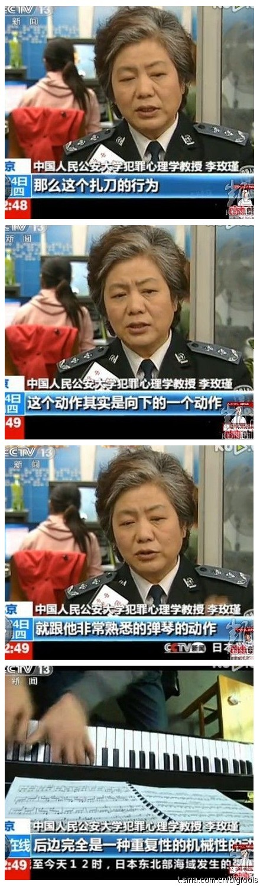

俺总是高估了广大屁民的消息灵通程度。在清明放假前，俺连续问好了几个同事：“药家鑫的事儿，听说了没有？”得到的多数回答都是：“要加薪啊！加多少啊？”，然后是一脸的惊喜，搞得俺非常的无语。所以，今天俺要聊一聊关于药家鑫的故事，顺便让大伙儿领教一下，特权阶层是如何玩弄法律的。
话说西安有个学校叫“西安音乐学院”，学校里有个大三的本科生叫“药家鑫”。据说此人是个阔少，在去年10月20日，开着私家车去会女友，一不留神撞倒了路人张女士。
光看开头这段，和“李刚门”是不是挺类似的？但接下来的情节就比较夸张了。这个药少爷撞人之后，下车一看，发现被撞的是一个农民，伤势还不清。关键是，药某人发现伤者在记他的车牌号。据药家鑫本人讲，为了避免日后被伤者纠缠，他拿出随身带的刀子，对张女士连捅数刀，致其当场死亡。杀人后，药某驾车逃离现场。
紧接着，他由于慌里慌张，在另一个路口又撞了2人，所幸只是轻伤。药某又想逃窜，但是该路口行人众多，被群众拦了下来。不久，交警到来，给药某人做了笔录。由于交警当时并不知道杀人的情节，当晚就放他走了。
警方经过2天排查，判定药家鑫有重大嫌疑，在10月22日将其抓获。但是药家鑫并未承认杀人的行径，第二次被放回家。
直到10月23日，药家鑫的父母把他带到警察局，他才交待了自己撞人之后又杀人灭口的事实。
光从故事的起因来看，此案的情节其实挺简单——就是一个灭绝人性的家伙，残忍地杀死一个素不相识的路人。而且他自己都已经供认不讳，各种物证（比如：作案的凶器、汽车撞击的痕迹）也都确凿无疑。
但是，大伙儿不要忘了，这是在天朝。天朝经常会发生一些让人匪夷所思、大跌眼镜的事情。
先来看看药某人的背景。一旦大伙儿搞明白此人的背景，对后续发生的一系列怪事，就会恍然大悟。
据官方报道称，其父母皆为“西安北方华山机械有限公司”的【普通职工】 。表面上看，貌似很普通嘛。但是网友们通过人肉搜索，发现里面大有奥妙。
这个“西安北方华山机械有限公司”，隶属中国兵器北方公司。通俗地说，就是解放军的兵工厂。
其父药庆卫，也不是普通的职工，而是解放军总后勤部派驻该厂的军代表。
“军代表”这个词，很多人（包括俺）都比较陌生。据某些知情网友介绍，“军代表”是一个很有油水的肥缺。（以下摘自网友们的原话）
药家鑫绝对不是一个普通的大学生，他和咱们这些屁民，是有本质区别滴。人家是【军二代】，比官二代、富二代更加牛B。
2009年发生在杭州的“七十码事件”，胡斌只是个富二代，还不是很嚣张——仅仅是超速撞死一人；2010年保定的“李刚门事件”，作为“官二代”的李启铭就嚣张多了，不光撞得1死1伤，还留下了千古名句——【我爸是李刚】。
而这次的军二代，就更嚣张了——撞了人还嫌不够，还要用刀当场捅死，才觉得过瘾。捅一刀还嫌不够，还捅了八刀。
此案发生后，众多的网友纷纷谴责药某没人性；而各种官方舆论，却在多或少地偏袒药某。请看：
当年的李刚门事件，CCTV 专门拨出宝贵的黄金时间，让李刚在镜头前痛苦流涕，据说感动了很多"不明真相的群众"。最后，李刚的儿子仅判了6年。（同样是酒后驾车撞死人，成都的某屁民被判死刑）
这次，CCTV 又如法炮制，其忽悠的手法和李刚门类似。
同样是让肇事者上电视进行长时间悲情表演；同样是不给被害人家属露脸的机会；同样是选择重点频道黄金时段，以便覆盖更多不明真相的群众；...
但是，军二代毕竟比官二代更牛B。CCAV 这次采用了一些变本加厉的造势手法。给人印象最深的，是一些貌似权威的砖家叫兽纷纷出笼。
这里面，最典型最傻B的，就是号称“中国犯罪心理学权威”的李玫瑾。此傻B的头衔是中国人民公安大学犯罪心理学叫兽。这个B是这样评价的：

一些报刊杂志（尤其是陕西那旮旯的）在事发之后，开始发表一些具有倾向性的评论。主要有如下一些的论调：
论调之一：
药氏的经济状况一般，父母是普通职工；其父无固定职业、其母的退休工资仅600~700元/月。有些媒体还特意拍摄了他家里一些寒酸的旧家具，以示其家境差。
真相是：
其父曾担任军代表（军代表有多牛B，刚才已说了）；其母提早退休（家境差的会提早退休吗？）；
药家鑫从小练习钢琴，还花钱整容，才读大三就开私家轿车上学。
想想你见过的大学生，开得起轿车的有多少比例？你周围的家庭，90年代买钢琴的有多少比例？
这样的家庭，经济状况会是一般吗？
论调之二：
药家鑫有主动自首的情节，应该从轻发落。
真相是：
请注意看本文开头“故事的起因”那段，药某人的行径，概括起来就是：
撞伤人 + 八刀毙命 + 驾车逃逸 + 撞伤两人 + 企图再次驾车逃逸 + 被群众拦住 + 对交警隐瞒 + 2天后被当作嫌疑人抓捕 + 再次对刑警隐瞒 + 第3天被家长带去公安局
这样的行径，难道能算是【主动自首】？
论调之三：
药家鑫杀人用的是普通水果刀。
真相是：
杀人凶器的长度约30公分（见下图）。
还有其它一些明显破绽，俺就不一一细说了。另外，官方媒体还大肆报道药家鑫是如何的品学兼优；钢琴弹得如何好、如何地具有艺术家气质；曾经获得过多少多少奖状（有些媒体还把奖状一一亮相）；学校的老师和同学对他的印象是如何的好；药氏父子的感情如何的深厚；......
这些报道是否属实，俺暂时无从考证；那些夸奖药某人品好的师生是否被收买，也未可知。即便这些都属实，难道因为一个人学习好、口碑好、有艺术家气质、父子情深，就可以在残忍杀人之后，逃脱惩罚？
反过来，很少有媒体报道被害人张妙被刺【八刀】的惨状；很少有媒体报道被害人还留下一个2岁的孩子；很少有媒体发出同情被害人的声音；......
2010年10月的案子，为什么拖到2011年3月23日才开庭？这是不是要给特权阶层的人士，留出宝贵的时间，便于他们四处活动，打通关节？再看看庭审时的一些耐人寻味的细节，大伙儿可以感觉到，特权阶层的精英们，那真是用心良苦啊！
这次的西安法庭，安排了500多人进行旁听。这500多人里面，400多人是大学生；这400多人里面，大多数是西安音乐学院的学生（也就是药某人的同学）。
与之形成鲜明反差的是，当地农民及受害者家属只有25人参加旁听。为啥村民这么少捏？因为政府派人到被害者的村子里，进行耐心劝导，让村民不要去法庭旁听。
介绍完旁观者，再来看看庭审时搞的那个问卷调查。
这个问卷调查是发给在法庭现场旁听的人。据说调查结果是：大部分人都要求对药家鑫网开一面。官方媒体还报道：这次问卷调查，将会作为法官量刑的参考。
在此，给大伙儿普及一下法律常识：我国现行的法律，从来就没有条文，允许拿民意调查作为量刑的依据。退一步讲，即使要拿民调作为量刑的依据，那么，被调查的人，也应该确保客观性。现场有这么多被告的同学，如何保证客观性？
据说西安音乐学院的很多同学，都支持药某人。更有甚者，还为其兽行叫好。最典型的，是一个叫“李颖”的傻B（李颖和李玫瑾，堪称药缸门事件的【李姓二B】）。此人是凶手的师妹，公然在人人网上为凶手叫好。此傻B还说，被害人张妙记别人车牌号的行为，是不要脸。（有下图为证）
冲着这些同学的言行，大伙儿想想看，法庭的问卷调查，能客观吗？（有网友说西安音乐学院是贵族学校，如果真是这样，就更无客观性可言）
法庭上，药家鑫的辩护律师，一直在拿如下3点在说事儿：
1、药家鑫是激情杀人；
2、药家鑫在校表现优异；
3、药家鑫有主动自首情节。
所谓的“主动自首情节”，前面已经介绍了，根本不能成立；另两条理由，也是难以服众。
再普及一下法律知识，根据最高法院的司法解释，针对故意杀人，只有如下情形方可从轻量刑：被害人有明显过错或对矛盾激化负有直接责任的；因婚姻、家庭、邻里纠纷等民间矛盾激化引发的故意杀人。
难道那个辩护律师不清楚这些？
庭审搞了3个多小时后，法官宣布：本案在经合议庭合议后，将择日宣判。为啥不“当庭宣判”，而要“择日宣判”捏？关键点在于——【择日】。
此案的法官，没准儿早已被搞定，他会选择一个恰当的时机来宣判。怎样的时机才算恰当捏？最好是等些时日，等民间的不满情绪渐渐消退、等广大屁民渐渐淡忘此事、等天朝再冒出另一个热点事件。一旦时机成熟，法官即可宣布药家鑫从轻发落。
另外，择日宣判也给药氏的家人争取了宝贵的时间。他们可以利用关系网，继续上窜下跳。
可能有些同学会纳闷了，药青伟再怎么牛B，顶多也就是西安的地头蛇。他咋能搞定这么多方方面面的人？
前面已经分析了，肇事者属于特权阶层。作为特权阶层，他家人自然会利用社会关系网和各种资源，企图摆平此事。那些被打点到的人，自然会帮他们家说话。但是，肯定还有不少人，是药家的人来不及打点，或者是鞭长莫及的。为啥这些人也都要帮肇事者说话捏？
俺不妨猜测一下：
那些握有实权的人（比如掌控各大舆论工具的、比如掌控司法体系的）都属于特权阶层。他们袒护药家鑫，实际上是为了保护自己。大家设想一下，假如连药家鑫这么穷凶极恶的人，最终都没有判死刑。那今后再有特权阶层的子女出来为非作歹，只要做得不如药家鑫过分，都可以不了了之。
今天写了这么多，俺想强调的是，天朝的法制已经彻底没有希望了。
大伙儿不要指望党国的官员中会冒出一个为民请命的包青天，不要指望党国的最高领导层会主动肃清腐败。具体的理由，俺在“我们还能指望什么？”一文，有详细分析，感兴趣的可以翻墙去看一下。
最后俺得承认，本文的标题起得不太好。自打毛太祖创建党国以来，法制就从来没“活”过，也就无所谓死不死。不过捏，这阵子正好是清明节，这标题还算顺口，就先凑合着用吧。
俺博客上，和本文相关的帖子（需翻墙）：
看看网友如何评论药家鑫案
革命尚未成功，网友仍需努力——继续围观药家鑫案
钱云会事件
我们还能指望什么？
★故事的起因
话说西安有个学校叫“西安音乐学院”，学校里有个大三的本科生叫“药家鑫”。据说此人是个阔少，在去年10月20日，开着私家车去会女友，一不留神撞倒了路人张女士。
光看开头这段，和“李刚门”是不是挺类似的？但接下来的情节就比较夸张了。这个药少爷撞人之后，下车一看，发现被撞的是一个农民，伤势还不清。关键是，药某人发现伤者在记他的车牌号。据药家鑫本人讲，为了避免日后被伤者纠缠，他拿出随身带的刀子，对张女士连捅数刀，致其当场死亡。杀人后，药某驾车逃离现场。
紧接着，他由于慌里慌张，在另一个路口又撞了2人，所幸只是轻伤。药某又想逃窜，但是该路口行人众多，被群众拦了下来。不久，交警到来，给药某人做了笔录。由于交警当时并不知道杀人的情节，当晚就放他走了。
警方经过2天排查，判定药家鑫有重大嫌疑，在10月22日将其抓获。但是药家鑫并未承认杀人的行径，第二次被放回家。
直到10月23日，药家鑫的父母把他带到警察局，他才交待了自己撞人之后又杀人灭口的事实。
光从故事的起因来看，此案的情节其实挺简单——就是一个灭绝人性的家伙，残忍地杀死一个素不相识的路人。而且他自己都已经供认不讳，各种物证（比如：作案的凶器、汽车撞击的痕迹）也都确凿无疑。
但是，大伙儿不要忘了，这是在天朝。天朝经常会发生一些让人匪夷所思、大跌眼镜的事情。
★药家鑫的背景
先来看看药某人的背景。一旦大伙儿搞明白此人的背景，对后续发生的一系列怪事，就会恍然大悟。
◇“西安北方华山机械有限公司”是啥玩意儿？
据官方报道称，其父母皆为“西安北方华山机械有限公司”的【普通职工】 。表面上看，貌似很普通嘛。但是网友们通过人肉搜索，发现里面大有奥妙。
这个“西安北方华山机械有限公司”，隶属中国兵器北方公司。通俗地说，就是解放军的兵工厂。
◇普通职工不普通，原来竟是军代表
其父药庆卫，也不是普通的职工，而是解放军总后勤部派驻该厂的军代表。
“军代表”这个词，很多人（包括俺）都比较陌生。据某些知情网友介绍，“军代表”是一个很有油水的肥缺。（以下摘自网友们的原话）
告诉大家吧：在军工企业或生产军工产品的企业里，什么董事长总经理，在军代表面前，都是渣，直接秒杀。
军代表在企业里属于甲方，是我军监督军械生产的重要管理人员，另外一个角度可以说是企业的衣食父母。企业的军工订单的获取，军工产品生产过程的质量监管，军工产品能否通过验收，军代表起着关键的作用。
军代表我知道，那绝对不是一般人，那是个肥差，很肥的差，就相当于过去给皇帝出去采购的督办。很多军一代都喜欢让自己的二代去当军代表的，不是什么人都可以去的。
驻厂的军代表，没有几千万的身家，出门都不好意思跟人打招呼。
军代表在厂里就是纯的亲爷爷，极无敌的说！
◇药某的背景总结
药家鑫绝对不是一个普通的大学生，他和咱们这些屁民，是有本质区别滴。人家是【军二代】，比官二代、富二代更加牛B。
2009年发生在杭州的“七十码事件”，胡斌只是个富二代，还不是很嚣张——仅仅是超速撞死一人；2010年保定的“李刚门事件”，作为“官二代”的李启铭就嚣张多了，不光撞得1死1伤，还留下了千古名句——【我爸是李刚】。
而这次的军二代，就更嚣张了——撞了人还嫌不够，还要用刀当场捅死，才觉得过瘾。捅一刀还嫌不够，还捅了八刀。
★看看舆论是如何造势的？
此案发生后，众多的网友纷纷谴责药某没人性；而各种官方舆论，却在多或少地偏袒药某。请看：
◇CCAV 的报道
当年的李刚门事件，CCTV 专门拨出宝贵的黄金时间，让李刚在镜头前痛苦流涕，据说感动了很多"不明真相的群众"。最后，李刚的儿子仅判了6年。（同样是酒后驾车撞死人，成都的某屁民被判死刑）
这次，CCTV 又如法炮制，其忽悠的手法和李刚门类似。
同样是让肇事者上电视进行长时间悲情表演；同样是不给被害人家属露脸的机会；同样是选择重点频道黄金时段，以便覆盖更多不明真相的群众；...
但是，军二代毕竟比官二代更牛B。CCAV 这次采用了一些变本加厉的造势手法。给人印象最深的，是一些貌似权威的砖家叫兽纷纷出笼。
这里面，最典型最傻B的，就是号称“中国犯罪心理学权威”的李玫瑾。此傻B的头衔是中国人民公安大学犯罪心理学叫兽。这个B是这样评价的：
因为他弹钢琴，手习惯了向下连续动作。有下图为证：
◇某些报纸的报道
一些报刊杂志（尤其是陕西那旮旯的）在事发之后，开始发表一些具有倾向性的评论。主要有如下一些的论调：
论调之一：
药氏的经济状况一般，父母是普通职工；其父无固定职业、其母的退休工资仅600~700元/月。有些媒体还特意拍摄了他家里一些寒酸的旧家具，以示其家境差。
真相是：
其父曾担任军代表（军代表有多牛B，刚才已说了）；其母提早退休（家境差的会提早退休吗？）；
药家鑫从小练习钢琴，还花钱整容，才读大三就开私家轿车上学。
想想你见过的大学生，开得起轿车的有多少比例？你周围的家庭，90年代买钢琴的有多少比例？
这样的家庭，经济状况会是一般吗？
论调之二：
药家鑫有主动自首的情节，应该从轻发落。
真相是：
请注意看本文开头“故事的起因”那段，药某人的行径，概括起来就是：
撞伤人 + 八刀毙命 + 驾车逃逸 + 撞伤两人 + 企图再次驾车逃逸 + 被群众拦住 + 对交警隐瞒 + 2天后被当作嫌疑人抓捕 + 再次对刑警隐瞒 + 第3天被家长带去公安局
这样的行径，难道能算是【主动自首】？
论调之三：
药家鑫杀人用的是普通水果刀。
真相是：
杀人凶器的长度约30公分（见下图）。
还有其它一些明显破绽，俺就不一一细说了。另外，官方媒体还大肆报道药家鑫是如何的品学兼优；钢琴弹得如何好、如何地具有艺术家气质；曾经获得过多少多少奖状（有些媒体还把奖状一一亮相）；学校的老师和同学对他的印象是如何的好；药氏父子的感情如何的深厚；......
这些报道是否属实，俺暂时无从考证；那些夸奖药某人品好的师生是否被收买，也未可知。即便这些都属实，难道因为一个人学习好、口碑好、有艺术家气质、父子情深，就可以在残忍杀人之后，逃脱惩罚？
反过来，很少有媒体报道被害人张妙被刺【八刀】的惨状；很少有媒体报道被害人还留下一个2岁的孩子；很少有媒体发出同情被害人的声音；......
★看看庭审是如何操作的？
2010年10月的案子，为什么拖到2011年3月23日才开庭？这是不是要给特权阶层的人士，留出宝贵的时间，便于他们四处活动，打通关节？再看看庭审时的一些耐人寻味的细节，大伙儿可以感觉到，特权阶层的精英们，那真是用心良苦啊！
◇精心安排的旁观者
这次的西安法庭，安排了500多人进行旁听。这500多人里面，400多人是大学生；这400多人里面，大多数是西安音乐学院的学生（也就是药某人的同学）。
与之形成鲜明反差的是，当地农民及受害者家属只有25人参加旁听。为啥村民这么少捏？因为政府派人到被害者的村子里，进行耐心劝导，让村民不要去法庭旁听。
◇意味深长的问卷调查
介绍完旁观者，再来看看庭审时搞的那个问卷调查。
这个问卷调查是发给在法庭现场旁听的人。据说调查结果是：大部分人都要求对药家鑫网开一面。官方媒体还报道：这次问卷调查，将会作为法官量刑的参考。
在此，给大伙儿普及一下法律常识：我国现行的法律，从来就没有条文，允许拿民意调查作为量刑的依据。退一步讲，即使要拿民调作为量刑的依据，那么，被调查的人，也应该确保客观性。现场有这么多被告的同学，如何保证客观性？
据说西安音乐学院的很多同学，都支持药某人。更有甚者，还为其兽行叫好。最典型的，是一个叫“李颖”的傻B（李颖和李玫瑾，堪称药缸门事件的【李姓二B】）。此人是凶手的师妹，公然在人人网上为凶手叫好。此傻B还说，被害人张妙记别人车牌号的行为，是不要脸。（有下图为证）
冲着这些同学的言行，大伙儿想想看，法庭的问卷调查，能客观吗？（有网友说西安音乐学院是贵族学校，如果真是这样，就更无客观性可言）
◇辩护律师的说辞
法庭上，药家鑫的辩护律师，一直在拿如下3点在说事儿：
1、药家鑫是激情杀人；
2、药家鑫在校表现优异；
3、药家鑫有主动自首情节。
所谓的“主动自首情节”，前面已经介绍了，根本不能成立；另两条理由，也是难以服众。
再普及一下法律知识，根据最高法院的司法解释，针对故意杀人，只有如下情形方可从轻量刑：被害人有明显过错或对矛盾激化负有直接责任的；因婚姻、家庭、邻里纠纷等民间矛盾激化引发的故意杀人。
难道那个辩护律师不清楚这些？
◇择日宣判的玄机
庭审搞了3个多小时后，法官宣布：本案在经合议庭合议后，将择日宣判。为啥不“当庭宣判”，而要“择日宣判”捏？关键点在于——【择日】。
此案的法官，没准儿早已被搞定，他会选择一个恰当的时机来宣判。怎样的时机才算恰当捏？最好是等些时日，等民间的不满情绪渐渐消退、等广大屁民渐渐淡忘此事、等天朝再冒出另一个热点事件。一旦时机成熟，法官即可宣布药家鑫从轻发落。
另外，择日宣判也给药氏的家人争取了宝贵的时间。他们可以利用关系网，继续上窜下跳。
★为何会有这么多人袒护凶手？
可能有些同学会纳闷了，药青伟再怎么牛B，顶多也就是西安的地头蛇。他咋能搞定这么多方方面面的人？
前面已经分析了，肇事者属于特权阶层。作为特权阶层，他家人自然会利用社会关系网和各种资源，企图摆平此事。那些被打点到的人，自然会帮他们家说话。但是，肯定还有不少人，是药家的人来不及打点，或者是鞭长莫及的。为啥这些人也都要帮肇事者说话捏？
俺不妨猜测一下：
那些握有实权的人（比如掌控各大舆论工具的、比如掌控司法体系的）都属于特权阶层。他们袒护药家鑫，实际上是为了保护自己。大家设想一下，假如连药家鑫这么穷凶极恶的人，最终都没有判死刑。那今后再有特权阶层的子女出来为非作歹，只要做得不如药家鑫过分，都可以不了了之。
★法制已死，切莫再寄以希望
今天写了这么多，俺想强调的是，天朝的法制已经彻底没有希望了。
大伙儿不要指望党国的官员中会冒出一个为民请命的包青天，不要指望党国的最高领导层会主动肃清腐败。具体的理由，俺在“我们还能指望什么？”一文，有详细分析，感兴趣的可以翻墙去看一下。
最后俺得承认，本文的标题起得不太好。自打毛太祖创建党国以来，法制就从来没“活”过，也就无所谓死不死。不过捏，这阵子正好是清明节，这标题还算顺口，就先凑合着用吧。
俺博客上，和本文相关的帖子（需翻墙）：
看看网友如何评论药家鑫案
革命尚未成功，网友仍需努力——继续围观药家鑫案
钱云会事件
我们还能指望什么？
版权声明
本博客所有的原创文章，作者皆保留版权。转载必须包含本声明，保持本文完整，并以超链接形式注明作者编程随想和本文原始地址：
https://program-think.blogspot.com/2011/04/law-is-dead.html
本博客所有的原创文章，作者皆保留版权。转载必须包含本声明，保持本文完整，并以超链接形式注明作者编程随想和本文原始地址：
https://program-think.blogspot.com/2011/04/law-is-dead.html